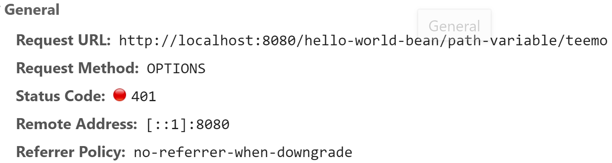

<!DOCTYPE html>
<html>
<head><meta name="generator" content="Hexo 3.8.0">
  <!-- hexo-inject:begin --><!-- hexo-inject:end --><meta charset="utf-8">
  

  
  <title>TODO List Project - Spring Security | TongTong Shi&#39;s Blog</title>
  <meta name="viewport" content="width=device-width, initial-scale=1, maximum-scale=1">
  <meta name="description" content="previous_step  Implementing Basic Authentication with Spring Boot and Spring Security 1. Overview of Security with Basic Auth and JWT Next, we will implement a basic approach called basic authenticati">
<meta name="keywords" content="Project,Angular,Spring Boot,Spring Security">
<meta property="og:type" content="article">
<meta property="og:title" content="TODO List Project - Spring Security">
<meta property="og:url" content="http://yoursite.com/2019/06/10/todo-authentication/index.html">
<meta property="og:site_name" content="TongTong Shi&#39;s Blog">
<meta property="og:description" content="previous_step  Implementing Basic Authentication with Spring Boot and Spring Security 1. Overview of Security with Basic Auth and JWT Next, we will implement a basic approach called basic authenticati">
<meta property="og:locale" content="default">
<meta property="og:image" content="http://yoursite.com/2019/06/10/todo-authentication/options.png">
<meta property="og:updated_time" content="2019-06-17T17:13:46.447Z">
<meta name="twitter:card" content="summary">
<meta name="twitter:title" content="TODO List Project - Spring Security">
<meta name="twitter:description" content="previous_step  Implementing Basic Authentication with Spring Boot and Spring Security 1. Overview of Security with Basic Auth and JWT Next, we will implement a basic approach called basic authenticati">
<meta name="twitter:image" content="http://yoursite.com/2019/06/10/todo-authentication/options.png">
  
    <link rel="alternate" href="/atom.xml" title="TongTong Shi&#39;s Blog" type="application/atom+xml">
  
  
    <link rel="icon" href="/favicon.png">
  
  
    <link href="//fonts.googleapis.com/css?family=Source+Code+Pro" rel="stylesheet" type="text/css">
  
  <link rel="stylesheet" href="/css/style.css"><!-- hexo-inject:begin --><!-- hexo-inject:end -->
</head>
</html>
<body>
  <!-- hexo-inject:begin --><!-- hexo-inject:end --><div id="container">
    <div id="wrap">
      <header id="header">
  <div id="banner"></div>
  <div id="header-outer" class="outer">
    <div id="header-title" class="inner">
      <h1 id="logo-wrap">
        <a href="/" id="logo">TongTong Shi&#39;s Blog</a>
      </h1>
      
    </div>
    <div id="header-inner" class="inner">
      <nav id="main-nav">
        <a id="main-nav-toggle" class="nav-icon"></a>
        
          <a class="main-nav-link" href="/">Home</a>
        
          <a class="main-nav-link" href="/archives">Archives</a>
        
      </nav>
      <nav id="sub-nav">
        
          <a id="nav-rss-link" class="nav-icon" href="/atom.xml" title="RSS Feed"></a>
        
        <a id="nav-search-btn" class="nav-icon" title="Search"></a>
      </nav>
      <div id="search-form-wrap">
        <form action="//google.com/search" method="get" accept-charset="UTF-8" class="search-form"><input type="search" name="q" class="search-form-input" placeholder="Search"><button type="submit" class="search-form-submit">&#xF002;</button><input type="hidden" name="sitesearch" value="http://yoursite.com"></form>
      </div>
    </div>
  </div>
</header>
      <div class="outer">
        <section id="main"><article id="post-todo-authentication" class="article article-type-post" itemscope itemprop="blogPost">
  <div class="article-meta">
    <a href="/2019/06/10/todo-authentication/" class="article-date">
  <time datetime="2019-06-10T16:29:01.000Z" itemprop="datePublished">2019-06-10</time>
</a>
    
  </div>
  <div class="article-inner">
    
    
      <header class="article-header">
        
  
    <h1 class="article-title" itemprop="name">
      TODO List Project - Spring Security
    </h1>
  

      </header>
    
    <div class="article-entry" itemprop="articleBody">
      
        <a href="/2019/06/08/todo-backendIII/" title="previous_step">previous_step</a>
<h2 id="implementing-basic-authentication-with-spring-boot-and-spring-security"><a class="markdownIt-Anchor" href="#implementing-basic-authentication-with-spring-boot-and-spring-security"></a> Implementing Basic Authentication with Spring Boot and Spring Security</h2>
<p><font color="dodgerblue"><strong>1. Overview of Security with Basic Auth and JWT</strong></font></p>
<p>Next, we will implement a basic approach called <strong>basic authentication</strong>, there along with every request you’d need to send a user and password. So if I have to agree to this request, I would need to send in a user id and password. We will also discuss the fact that sending a user id and password with every request is not safe becaue if somebody gets the id and password then they can do everything with it. And that’s where we create a temporary token call <strong>JWT</strong>, i.e. JSON Web Token, and we will discuss about what is the difference between <strong>basic security</strong> and <strong>JWT</strong>, and how <strong>JWT</strong> is more secure. We enhance our services with authentication, and have front end application connect to it.</p>
<a id="more"></a>
<p><font color="dodgerblue"><strong>2. Setting Up Spring Security</strong></font></p>
<p>The easiest way you can make something secure is adding a very simple dependency, <code>spring-boot-starter-security</code>. It is the spring boot starter for implementing security in web applications, as well as RESTful services.</p>
<p>Now, when visiting <code>http://localhost:8080/*</code>, it is taking us to log in page. There is a <code>form</code> in the login page. That’s why, this is called a form based authentication. The default username is <em>user</em>, and the default password is printed on the console. After inputing username and password, we can execute any number of other requests.<font color="purple"> So once you enter the user id and password with form based authenticcation, a <strong>session cookie</strong> is set. So there is a <strong>session</strong> for you which is created on the <strong>server side</strong>, and a <strong>cookie</strong> is now registered in <strong>your browser</strong>, and that <strong>cookie</strong> is sent along with every request.</font></p>
<p><font color="dodgerblue"><strong>3. Configuring Standard UserId and Password</strong></font></p>
<p>We can set the username and password in <code>application.properties</code>.</p>
<figure class="highlight pgsql"><table><tr><td class="gutter"><pre><span class="line">1</span><br><span class="line">2</span><br></pre></td><td class="code"><pre><span class="line">spring.<span class="keyword">security</span>.<span class="keyword">user</span>.name=<span class="keyword">user</span></span><br><span class="line">spring.<span class="keyword">security</span>.<span class="keyword">user</span>.<span class="keyword">password</span>=<span class="keyword">password</span></span><br></pre></td></tr></table></figure>
<p><font color="dodgerblue"><strong>4. Enhancing Angular Welcome Data Service to use Basic Auth</strong></font></p>
<p>Now, if we click the button <code>Get Welcome Message</code>, we may encouter an errer. That is <font color="red"><code>Access to XMLHttpRequest at 'http://localhost:8080/hello-world-bean/path-variable/teemo' from origin 'http://localhost:4200' has been blocked by CORS policy: No 'Access-Control-Allow-Origin' header is present on the requested resource.</code></font> To solve it, we need to add authentication in the <code>header</code>.</p>
<figure class="highlight javascript"><figcaption><span>lang: typescript</span></figcaption><table><tr><td class="gutter"><pre><span class="line">1</span><br><span class="line">2</span><br><span class="line">3</span><br><span class="line">4</span><br><span class="line">5</span><br><span class="line">6</span><br><span class="line">7</span><br><span class="line">8</span><br><span class="line">9</span><br><span class="line">10</span><br><span class="line">11</span><br><span class="line">12</span><br><span class="line">13</span><br><span class="line">14</span><br><span class="line">15</span><br><span class="line">16</span><br></pre></td><td class="code"><pre><span class="line"><span class="comment">// http://localhost:8080/hello-world-bean/path-variable/teemo</span></span><br><span class="line">executeHelloWorldServiceWithPathVariable(name) &#123;</span><br><span class="line"><span class="comment">//console.log("Execute Hello World Bean Service");</span></span><br><span class="line">  <span class="keyword">let</span> basicAuthHeaderString = <span class="keyword">this</span>.createBasicAuthenticationHttpHeader();</span><br><span class="line"></span><br><span class="line">  <span class="keyword">let</span> headers = <span class="keyword">new</span> HttpHeaders(&#123; <span class="attr">Authorization</span>: basicAuthHeaderString &#125;)</span><br><span class="line"></span><br><span class="line">  <span class="keyword">return</span> <span class="keyword">this</span>.http.get&lt;HelloWorldBean&gt;(<span class="string">`http://localhost:8080/hello-world-bean/path-variable/<span class="subst">$&#123;name&#125;</span>`</span>, &#123;<span class="attr">headers</span>: headers&#125;);</span><br><span class="line">&#125;</span><br><span class="line"></span><br><span class="line">createBasicAuthenticationHttpHeader() &#123;</span><br><span class="line">  <span class="keyword">let</span> username = <span class="string">'teemo'</span>;</span><br><span class="line">  <span class="keyword">let</span> password = <span class="string">'233'</span>;</span><br><span class="line">  <span class="keyword">let</span> basicAuthHeaderString = <span class="string">'Basic'</span> + <span class="built_in">window</span>.btoa(username + <span class="string">':'</span> + password);</span><br><span class="line">  <span class="keyword">return</span> basicAuthHeaderString;</span><br><span class="line">&#125;</span><br></pre></td></tr></table></figure>
<p>Now the error messsage bocomes <font color="red"><code>Access to XMLHttpRequest at 'http://localhost:8080/hello-world-bean/path-variable/teemo' from origin 'http://localhost:4200' has been blocked by CORS policy: Response to preflight request doesn't pass access control check: It does not have HTTP ok status.</code></font> When we check the <em>network</em>, we can see there is a new request which is being sent. Let’s look at the General. There is a new request method which is being used. It is <em>OPTIONS</em>.<br>
</p>
<p>What is happending is as soon as we added basic authentication some kind of authentication to our request. Before making the http call, there is something called <code>options check</code> which is done and you can see that this <code>options check</code> is failing. We will fix it in the next step, along with something called <strong>CSRM</strong>.</p>
<p><font color="dodgerblue"><strong>5. Configuring Spring Security to Disable CSRF and Enable <em>OPTION</em> Requests</strong></font></p>
<p>What happens is whenever we add authorization credentials on a <em>GET</em> request, or a <em>POST</em> request, what happens is a <em>preflight</em> request. So before sending the complete request, what happens is a request called <em>options</em> request is sent to check if you have the right permitions.<br>
And what is happening is that <em>options</em> request is being denied right now. Next, we will fix it.<br>
The other think will be working on this specific step, is something called <strong>CSRF</strong>, i.e. cross-site request format.</p>
<ul>
<li>Find the method <code>configure()</code> in class <code>WebSecurityConfigurerAdapter</code> and override it to solve the problem with <em>options</em>, as well as to disable something calle <strong>CSRF</strong>.
<ul>
<li><code>.csrf().disable()</code> : disable CSRF</li>
<li><code>.antMatchers(HttpMethod.OPTIONS, &quot;/**&quot;).permitAll()</code> :  except for <em>options</em> request to all URLS</li>
<li><code>.anyRequest().authenticated()</code> : authenticate all the requests</li>
<li><code>.httpBasic()</code> : use basic authentication</li>
</ul>
</li>
</ul>
<p>The code is shown as follows.</p>
<figure class="highlight css"><figcaption><span>lang: java</span></figcaption><table><tr><td class="gutter"><pre><span class="line">1</span><br><span class="line">2</span><br><span class="line">3</span><br><span class="line">4</span><br><span class="line">5</span><br><span class="line">6</span><br><span class="line">7</span><br><span class="line">8</span><br><span class="line">9</span><br><span class="line">10</span><br><span class="line">11</span><br><span class="line">12</span><br><span class="line">13</span><br><span class="line">14</span><br><span class="line">15</span><br><span class="line">16</span><br><span class="line">17</span><br><span class="line">18</span><br><span class="line">19</span><br><span class="line">20</span><br><span class="line">21</span><br><span class="line">22</span><br><span class="line">23</span><br><span class="line">24</span><br><span class="line">25</span><br></pre></td><td class="code"><pre><span class="line"><span class="selector-tag">package</span> <span class="selector-tag">com</span><span class="selector-class">.example</span><span class="selector-class">.todoList</span><span class="selector-class">.basic</span><span class="selector-class">.auth</span>;</span><br><span class="line"></span><br><span class="line"><span class="selector-tag">import</span> <span class="selector-tag">org</span><span class="selector-class">.springframework</span><span class="selector-class">.context</span><span class="selector-class">.annotation</span><span class="selector-class">.Configuration</span>;</span><br><span class="line"><span class="selector-tag">import</span> <span class="selector-tag">org</span><span class="selector-class">.springframework</span><span class="selector-class">.http</span><span class="selector-class">.HttpMethod</span>;</span><br><span class="line"><span class="selector-tag">import</span> <span class="selector-tag">org</span><span class="selector-class">.springframework</span><span class="selector-class">.security</span><span class="selector-class">.config</span><span class="selector-class">.annotation</span><span class="selector-class">.web</span><span class="selector-class">.builders</span><span class="selector-class">.HttpSecurity</span>;</span><br><span class="line"><span class="selector-tag">import</span> <span class="selector-tag">org</span><span class="selector-class">.springframework</span><span class="selector-class">.security</span><span class="selector-class">.config</span><span class="selector-class">.annotation</span><span class="selector-class">.web</span><span class="selector-class">.configuration</span><span class="selector-class">.EnableWebSecurity</span>;</span><br><span class="line"><span class="selector-tag">import</span> <span class="selector-tag">org</span><span class="selector-class">.springframework</span><span class="selector-class">.security</span><span class="selector-class">.config</span><span class="selector-class">.annotation</span><span class="selector-class">.web</span><span class="selector-class">.configuration</span><span class="selector-class">.WebSecurityConfigurerAdapter</span>;</span><br><span class="line"><span class="selector-tag">import</span> <span class="selector-tag">org</span><span class="selector-class">.springframework</span><span class="selector-class">.security</span><span class="selector-class">.config</span><span class="selector-class">.annotation</span><span class="selector-class">.web</span><span class="selector-class">.configurers</span><span class="selector-class">.ExpressionUrlAuthorizationConfigurer</span>;</span><br><span class="line"></span><br><span class="line">@<span class="keyword">Configuration</span></span><br><span class="line">@<span class="keyword">EnableWebSecurity</span></span><br><span class="line"><span class="keyword">public</span> class SpringSecurityConfigurationBasicAuth extends WebSecurityConfigurerAdapter &#123;</span><br><span class="line"></span><br><span class="line">  @<span class="keyword">Override</span></span><br><span class="line">  protected void configure(HttpSecurity http) throws Exception &#123;</span><br><span class="line"></span><br><span class="line">    <span class="selector-tag">http</span></span><br><span class="line">	  <span class="selector-class">.csrf</span>()<span class="selector-class">.disable</span>()</span><br><span class="line">	  <span class="selector-class">.authorizeRequests</span>()</span><br><span class="line">	  <span class="selector-class">.antMatchers</span>(<span class="selector-tag">HttpMethod</span><span class="selector-class">.OPTIONS</span>, "<span class="comment">/**").permitAll()</span></span><br><span class="line"><span class="comment">	  .anyRequest().authenticated()</span></span><br><span class="line"><span class="comment">	  .and()//.formLogin().and()</span></span><br><span class="line"><span class="comment">	  .httpBasic();</span></span><br><span class="line"><span class="comment">  &#125;</span></span><br><span class="line"><span class="comment">&#125;</span></span><br></pre></td></tr></table></figure>
<p><strong>Ensure that this call should be in the same or subclass of the <code>TodoListApplication()</code>.</strong></p>
<p><font color="dodgerblue"><strong>6. Creating Angular HttpInterceptor to Add Basic Auth Header</strong></font></p>
<p>Now, we can successfully call the <code>HelloWorldBean</code> request. But other requests are not valid. To solve this, one option is adding the above <code>authentication header</code> in every http request. Absolutely this is not efficient.<br>
<font color="purple">Then we can use <em>HttpInterceptor</em>. The interceptors would enable us to add any request header to every request.</font></p>
<ul>
<li>Create a service <code>HttpInterceptor</code>. <code>ng generate service service/http/HttpIntercepterBasicAuth</code></li>
<li>Let <code>HttpIntercepterBasicAuthService</code> implements<code>HttpInterceptor</code> and override method <code>intercept(request: HttpRequest&lt;any&gt;, next: HttpHandler)</code>.
<ul>
<li>clone the request.</li>
<li>add authorization header.</li>
<li>send the modified request to the next HTTP handler.</li>
</ul>
</li>
</ul>
<p>The code is shown as follows.</p>
<figure class="highlight typescript"><figcaption><span>lang: typescript</span></figcaption><table><tr><td class="gutter"><pre><span class="line">1</span><br><span class="line">2</span><br><span class="line">3</span><br><span class="line">4</span><br><span class="line">5</span><br><span class="line">6</span><br><span class="line">7</span><br><span class="line">8</span><br><span class="line">9</span><br><span class="line">10</span><br><span class="line">11</span><br><span class="line">12</span><br><span class="line">13</span><br><span class="line">14</span><br><span class="line">15</span><br><span class="line">16</span><br><span class="line">17</span><br><span class="line">18</span><br><span class="line">19</span><br><span class="line">20</span><br></pre></td><td class="code"><pre><span class="line"><span class="keyword">export</span> <span class="keyword">class</span> HttpIntercepterBasicAuthService <span class="keyword">implements</span> HttpInterceptor &#123;</span><br><span class="line"></span><br><span class="line">  <span class="keyword">constructor</span>(<span class="params"></span></span><br><span class="line"><span class="params"></span></span><br><span class="line"><span class="params">  </span>) &#123; &#125;</span><br><span class="line"></span><br><span class="line">  intercept(request: HttpRequest&lt;<span class="built_in">any</span>&gt;, next: HttpHandler) &#123;</span><br><span class="line">    <span class="keyword">let</span> username = <span class="string">'teemo'</span>;</span><br><span class="line">    <span class="keyword">let</span> password = <span class="string">'233'</span>;</span><br><span class="line">    <span class="keyword">let</span> basicAuthHeaderString = <span class="string">'Basic '</span> + <span class="built_in">window</span>.btoa(username + <span class="string">':'</span> + password);</span><br><span class="line"></span><br><span class="line">    request = request.clone(&#123;</span><br><span class="line">      setHeaders: &#123;</span><br><span class="line">        Authorization: basicAuthHeaderString</span><br><span class="line">      &#125;</span><br><span class="line">    &#125;)</span><br><span class="line"></span><br><span class="line">    <span class="keyword">return</span> next.handle(request);</span><br><span class="line">  &#125;</span><br><span class="line">&#125;</span><br></pre></td></tr></table></figure>
<p><font color="dodgerblue"><strong>7. Configure HttpInterceptor as Provider in App Module</strong></font></p>
<p>Next, we configure <em>HttpInterceptor</em> to be used in our module. Where is that module? <code>app.module.ts</code>. In here we have to confinure a provider for <em>HttpInterceptor</em>. We can do it like this,</p>
<figure class="highlight yaml"><figcaption><span>lang: typescript</span></figcaption><table><tr><td class="gutter"><pre><span class="line">1</span><br><span class="line">2</span><br><span class="line">3</span><br></pre></td><td class="code"><pre><span class="line"><span class="attr">providers:</span> <span class="string">[</span></span><br><span class="line">  <span class="string">&#123;</span> <span class="attr">provide:</span> <span class="string">HTTP_INTERCEPTORS,</span> <span class="attr">useClass:</span> <span class="string">HttpIntercepterBasicAuthService,</span> <span class="attr">multi:</span> <span class="literal">true</span> <span class="string">&#125;</span></span><br><span class="line"><span class="string">],</span></span><br></pre></td></tr></table></figure>
<p>Now, all requests related to Todo Service work.</p>
<p><font color="dodgerblue"><strong>8. Create Basic Authentication RESTful Service in Spring Boot</strong></font></p>
<p>The problem is the login page is still using hard-coded authentication. Now we’ll create a service in the backend. The idea behind that is when the user is trying to login, we try to hit the service, and if the service returns validate response, then that means the user is authenticated. Otherwise the user is not really authenticated.</p>
<p>We create a controller <code>AuthenticationController</code>.</p>
<figure class="highlight less"><figcaption><span>lang: java</span></figcaption><table><tr><td class="gutter"><pre><span class="line">1</span><br><span class="line">2</span><br><span class="line">3</span><br><span class="line">4</span><br><span class="line">5</span><br><span class="line">6</span><br><span class="line">7</span><br><span class="line">8</span><br><span class="line">9</span><br></pre></td><td class="code"><pre><span class="line"><span class="variable">@CrossOrigin</span>(origins = <span class="string">"http://localhost:4200"</span>)</span><br><span class="line"><span class="variable">@RestController</span></span><br><span class="line">public class AuthenticationController &#123;</span><br><span class="line">  <span class="comment">// GET</span></span><br><span class="line">  <span class="variable">@GetMapping</span>(path = <span class="string">"/basicauth"</span>)</span><br><span class="line">  public AuthenticationBean authBean() &#123;</span><br><span class="line">      <span class="selector-tag">return</span> <span class="selector-tag">new</span> <span class="selector-tag">AuthenticationBean</span>(<span class="string">"You are authenticated."</span>);</span><br><span class="line">  &#125;</span><br><span class="line">&#125;</span><br></pre></td></tr></table></figure>
<p><font color="dodgerblue"><strong>9. Create Angular Basic Authentication Service</strong></font></p>
<p>We want to call the above RESTful service in our <code>LoginComponent</code>. First, let’s code <code>basic-authentication.service.ts</code>.</p>
<ul>
<li><code>.pipe()</code> : if the http request is successful, then do the things in pipe as well. In <code>pipe()</code>, we can define, if there is a proper response coming back, then <code>map</code> it.</li>
<li>An important thing about doing stuff when you are working on the observer is to <strong>return the data back</strong>. Because the observable is executed only when somebody subscribes to it. And they would want to see the data.</li>
</ul>
<details>
<summary>CLICK ME</summary>
<figure class="highlight typescript"><figcaption><span>lang: typescript</span></figcaption><table><tr><td class="gutter"><pre><span class="line">1</span><br><span class="line">2</span><br><span class="line">3</span><br><span class="line">4</span><br><span class="line">5</span><br><span class="line">6</span><br><span class="line">7</span><br><span class="line">8</span><br><span class="line">9</span><br><span class="line">10</span><br><span class="line">11</span><br><span class="line">12</span><br><span class="line">13</span><br><span class="line">14</span><br><span class="line">15</span><br><span class="line">16</span><br><span class="line">17</span><br><span class="line">18</span><br><span class="line">19</span><br><span class="line">20</span><br><span class="line">21</span><br><span class="line">22</span><br><span class="line">23</span><br><span class="line">24</span><br><span class="line">25</span><br><span class="line">26</span><br><span class="line">27</span><br><span class="line">28</span><br><span class="line">29</span><br><span class="line">30</span><br><span class="line">31</span><br><span class="line">32</span><br><span class="line">33</span><br><span class="line">34</span><br><span class="line">35</span><br><span class="line">36</span><br><span class="line">37</span><br><span class="line">38</span><br><span class="line">39</span><br><span class="line">40</span><br><span class="line">41</span><br><span class="line">42</span><br><span class="line">43</span><br><span class="line">44</span><br><span class="line">45</span><br><span class="line">46</span><br><span class="line">47</span><br><span class="line">48</span><br><span class="line">49</span><br><span class="line">50</span><br><span class="line">51</span><br><span class="line">52</span><br><span class="line">53</span><br><span class="line">54</span><br><span class="line">55</span><br><span class="line">56</span><br><span class="line">57</span><br></pre></td><td class="code"><pre><span class="line"><span class="keyword">import</span> &#123; Injectable &#125; <span class="keyword">from</span> <span class="string">'@angular/core'</span>;</span><br><span class="line"><span class="keyword">import</span> &#123; HttpHeaders, HttpClient &#125; <span class="keyword">from</span> <span class="string">'@angular/common/http'</span>;</span><br><span class="line"><span class="keyword">import</span> &#123; map &#125; <span class="keyword">from</span> <span class="string">'rxjs/operators'</span>;</span><br><span class="line"></span><br><span class="line"><span class="meta">@Injectable</span>(&#123;</span><br><span class="line">  providedIn: <span class="string">'root'</span></span><br><span class="line">&#125;)</span><br><span class="line"></span><br><span class="line"><span class="keyword">export</span> <span class="keyword">class</span> BasicAuthenticationService &#123;</span><br><span class="line"></span><br><span class="line">  <span class="keyword">constructor</span>(<span class="params"></span></span><br><span class="line"><span class="params">    <span class="keyword">private</span> http: HttpClient</span></span><br><span class="line"><span class="params">  </span>) &#123; &#125;</span><br><span class="line"></span><br><span class="line">  authenticate(username, password) &#123;</span><br><span class="line">    <span class="keyword">if</span> (username === <span class="string">'teemo'</span> &amp;&amp; password === <span class="string">'233'</span>) &#123;</span><br><span class="line">      sessionStorage.setItem(<span class="string">'authenticaterUser'</span>, username);</span><br><span class="line">      <span class="keyword">return</span> <span class="literal">true</span>;</span><br><span class="line">    &#125;</span><br><span class="line"></span><br><span class="line">    <span class="keyword">return</span> <span class="literal">false</span>;</span><br><span class="line">  &#125;</span><br><span class="line"></span><br><span class="line">  executeAuthenticationService(username, password) &#123;</span><br><span class="line">    <span class="keyword">let</span> basicAuthHeaderString = <span class="string">'Basic '</span> + <span class="built_in">window</span>.btoa(username + <span class="string">':'</span> + password);</span><br><span class="line"></span><br><span class="line">    <span class="keyword">let</span> headers = <span class="keyword">new</span> HttpHeaders(&#123;</span><br><span class="line">      Authorization: basicAuthHeaderString</span><br><span class="line">    &#125;)</span><br><span class="line"></span><br><span class="line">    <span class="keyword">return</span> <span class="keyword">this</span>.http.get&lt;AuthenticationBean&gt;(</span><br><span class="line">      <span class="string">`http://localhost:8080/basicauth`</span>, </span><br><span class="line">      &#123;headers: headers&#125;).pipe(</span><br><span class="line">        map(</span><br><span class="line">          data =&gt; &#123;</span><br><span class="line">            sessionStorage.setItem(<span class="string">'authenticaterUser'</span>, username);</span><br><span class="line">            <span class="keyword">return</span> data;</span><br><span class="line">          &#125;</span><br><span class="line">        )</span><br><span class="line">      );</span><br><span class="line">  &#125;</span><br><span class="line"></span><br><span class="line">  isUserLoggedIn() &#123;</span><br><span class="line">    <span class="keyword">let</span> user = sessionStorage.getItem(<span class="string">'authenticaterUser'</span>)</span><br><span class="line">    <span class="keyword">return</span> !(user === <span class="literal">null</span>)</span><br><span class="line">  &#125;</span><br><span class="line"></span><br><span class="line">  logout() &#123;</span><br><span class="line">    sessionStorage.removeItem(<span class="string">'authenticaterUser'</span>);</span><br><span class="line">  &#125;</span><br><span class="line"></span><br><span class="line">&#125;</span><br><span class="line"></span><br><span class="line"><span class="keyword">export</span> <span class="keyword">class</span> AuthenticationBean &#123;</span><br><span class="line">  <span class="keyword">constructor</span>(<span class="params"><span class="keyword">public</span> message: <span class="built_in">string</span></span>) &#123;&#125;</span><br><span class="line">&#125;</span><br><span class="line"></span><br></pre></td></tr></table></figure>
</details>
<p><font color="dodgerblue"><strong>10. Connecting Login Page to Basic Authentication Service</strong></font></p>
<p>In <code>login.component.ts</code>, add method <code>handleBasicAuthLogin()</code>.</p>
<figure class="highlight kotlin"><figcaption><span>lang: typescript</span></figcaption><table><tr><td class="gutter"><pre><span class="line">1</span><br><span class="line">2</span><br><span class="line">3</span><br><span class="line">4</span><br><span class="line">5</span><br><span class="line">6</span><br><span class="line">7</span><br><span class="line">8</span><br><span class="line">9</span><br><span class="line">10</span><br><span class="line">11</span><br><span class="line">12</span><br><span class="line">13</span><br><span class="line">14</span><br><span class="line">15</span><br></pre></td><td class="code"><pre><span class="line">handleBasicAuthLogin() &#123;</span><br><span class="line">  <span class="keyword">this</span>.basicAuthenticationService</span><br><span class="line">    .executeAuthenticationService(<span class="keyword">this</span>.username, <span class="keyword">this</span>.password)</span><br><span class="line">    .subscribe(</span><br><span class="line">      <span class="keyword">data</span> =&gt; &#123;</span><br><span class="line">        console.log(<span class="keyword">data</span>);</span><br><span class="line">        <span class="keyword">this</span>.router.navigate([<span class="string">'welcome'</span>, <span class="keyword">this</span>.username])</span><br><span class="line">        <span class="keyword">this</span>.invalidLogin = <span class="literal">false</span>;</span><br><span class="line">      &#125;,</span><br><span class="line">      error =&gt; &#123;</span><br><span class="line">        console.log(error)</span><br><span class="line">        <span class="keyword">this</span>.invalidLogin = <span class="literal">true</span>;</span><br><span class="line">      &#125;</span><br><span class="line">    )</span><br><span class="line">&#125;</span><br></pre></td></tr></table></figure>
<p>In the next few steps, we refactor our code in Angular Frontend to eliminate hard-code.</p>
<p><font color="dodgerblue"><strong>11. Refactoring Angular Basic Authentication Service</strong></font></p>
<details>
<summary>CLICK ME</summary>
<figure class="highlight typescript"><figcaption><span>lang: typescript</span></figcaption><table><tr><td class="gutter"><pre><span class="line">1</span><br><span class="line">2</span><br><span class="line">3</span><br><span class="line">4</span><br><span class="line">5</span><br><span class="line">6</span><br><span class="line">7</span><br><span class="line">8</span><br><span class="line">9</span><br><span class="line">10</span><br><span class="line">11</span><br><span class="line">12</span><br><span class="line">13</span><br><span class="line">14</span><br><span class="line">15</span><br><span class="line">16</span><br><span class="line">17</span><br><span class="line">18</span><br><span class="line">19</span><br><span class="line">20</span><br><span class="line">21</span><br><span class="line">22</span><br><span class="line">23</span><br><span class="line">24</span><br><span class="line">25</span><br><span class="line">26</span><br><span class="line">27</span><br><span class="line">28</span><br><span class="line">29</span><br><span class="line">30</span><br><span class="line">31</span><br><span class="line">32</span><br><span class="line">33</span><br><span class="line">34</span><br><span class="line">35</span><br><span class="line">36</span><br><span class="line">37</span><br><span class="line">38</span><br><span class="line">39</span><br><span class="line">40</span><br><span class="line">41</span><br><span class="line">42</span><br><span class="line">43</span><br><span class="line">44</span><br><span class="line">45</span><br><span class="line">46</span><br><span class="line">47</span><br><span class="line">48</span><br><span class="line">49</span><br><span class="line">50</span><br><span class="line">51</span><br><span class="line">52</span><br><span class="line">53</span><br><span class="line">54</span><br><span class="line">55</span><br><span class="line">56</span><br><span class="line">57</span><br><span class="line">58</span><br><span class="line">59</span><br><span class="line">60</span><br></pre></td><td class="code"><pre><span class="line"><span class="keyword">import</span> &#123; Injectable &#125; <span class="keyword">from</span> <span class="string">'@angular/core'</span>;</span><br><span class="line"><span class="keyword">import</span> &#123; HttpHeaders, HttpClient &#125; <span class="keyword">from</span> <span class="string">'@angular/common/http'</span>;</span><br><span class="line"><span class="keyword">import</span> &#123; map &#125; <span class="keyword">from</span> <span class="string">'rxjs/operators'</span>;</span><br><span class="line"></span><br><span class="line"><span class="meta">@Injectable</span>(&#123;</span><br><span class="line">  providedIn: <span class="string">'root'</span></span><br><span class="line">&#125;)</span><br><span class="line"><span class="keyword">export</span> <span class="keyword">class</span> BasicAuthenticationService &#123;</span><br><span class="line"></span><br><span class="line">  <span class="keyword">constructor</span>(<span class="params"></span></span><br><span class="line"><span class="params">    <span class="keyword">private</span> http: HttpClient</span></span><br><span class="line"><span class="params">  </span>) &#123; &#125;</span><br><span class="line"></span><br><span class="line">  executeAuthenticationService(username, password) &#123;</span><br><span class="line">    </span><br><span class="line">    <span class="keyword">let</span> basicAuthHeaderString = <span class="string">'Basic '</span> + <span class="built_in">window</span>.btoa(username + <span class="string">':'</span> + password);</span><br><span class="line"></span><br><span class="line">    <span class="keyword">let</span> headers = <span class="keyword">new</span> HttpHeaders(&#123;</span><br><span class="line">      Authorization: basicAuthHeaderString</span><br><span class="line">    &#125;)</span><br><span class="line"></span><br><span class="line">    <span class="keyword">return</span> <span class="keyword">this</span>.http.get&lt;AuthenticationBean&gt;(</span><br><span class="line">      <span class="string">`http://localhost:8080/basicauth`</span>, </span><br><span class="line">      &#123;headers: headers&#125;).pipe(</span><br><span class="line">        map(</span><br><span class="line">          data =&gt; &#123;</span><br><span class="line">            sessionStorage.setItem(<span class="string">'authenticaterUser'</span>, username);</span><br><span class="line">            sessionStorage.setItem(<span class="string">'token'</span>, basicAuthHeaderString);</span><br><span class="line"></span><br><span class="line">            <span class="keyword">return</span> data;</span><br><span class="line">          &#125;</span><br><span class="line">        )</span><br><span class="line">      );</span><br><span class="line">  &#125;</span><br><span class="line"></span><br><span class="line">  getAuthenticatedUser() &#123;</span><br><span class="line">    <span class="keyword">return</span> sessionStorage.getItem(<span class="string">'authenticaterUser'</span>);</span><br><span class="line">  &#125;</span><br><span class="line"></span><br><span class="line">  getAuthenticatedToken() &#123;</span><br><span class="line">    <span class="keyword">if</span> (<span class="keyword">this</span>.getAuthenticatedUser())</span><br><span class="line">      <span class="keyword">return</span> sessionStorage.getItem(<span class="string">'token'</span>);</span><br><span class="line">  &#125;</span><br><span class="line"></span><br><span class="line">  isUserLoggedIn() &#123;</span><br><span class="line">    <span class="keyword">let</span> user = sessionStorage.getItem(<span class="string">'authenticaterUser'</span>)</span><br><span class="line">    <span class="keyword">return</span> !(user === <span class="literal">null</span>)</span><br><span class="line">  &#125;</span><br><span class="line"></span><br><span class="line">  logout() &#123;</span><br><span class="line">    sessionStorage.removeItem(<span class="string">'authenticaterUser'</span>);</span><br><span class="line">    sessionStorage.removeItem(<span class="string">'token'</span>);</span><br><span class="line">  &#125;</span><br><span class="line"></span><br><span class="line">&#125;</span><br><span class="line"></span><br><span class="line"><span class="keyword">export</span> <span class="keyword">class</span> AuthenticationBean &#123;</span><br><span class="line">  <span class="keyword">constructor</span>(<span class="params"><span class="keyword">public</span> message: <span class="built_in">string</span></span>) &#123;&#125;</span><br><span class="line">&#125;</span><br><span class="line"></span><br></pre></td></tr></table></figure>
</details>
<p><font color="dodgerblue"><strong>12. Refactoring HttpInterceptor to use Basic Authentication Token</strong></font></p>
<p>Remove the hard-coded part, get the <code>token</code> and <code>username</code> from <code>session</code>.</p>
<details>
<summary>CLICK ME</summary>
<figure class="highlight delphi"><figcaption><span>lang: typescript</span></figcaption><table><tr><td class="gutter"><pre><span class="line">1</span><br><span class="line">2</span><br><span class="line">3</span><br><span class="line">4</span><br><span class="line">5</span><br><span class="line">6</span><br><span class="line">7</span><br><span class="line">8</span><br><span class="line">9</span><br><span class="line">10</span><br><span class="line">11</span><br><span class="line">12</span><br><span class="line">13</span><br><span class="line">14</span><br><span class="line">15</span><br><span class="line">16</span><br><span class="line">17</span><br><span class="line">18</span><br><span class="line">19</span><br><span class="line">20</span><br><span class="line">21</span><br><span class="line">22</span><br></pre></td><td class="code"><pre><span class="line"><span class="function"><span class="keyword">constructor</span><span class="params">(</span></span></span><br><span class="line"><span class="function"><span class="params">  <span class="keyword">private</span> basicAuthenticationService: BasicAuthenticationService</span></span></span><br><span class="line"><span class="function"><span class="params">)</span> <span class="comment">&#123; &#125;</span></span></span><br><span class="line"><span class="function"></span></span><br><span class="line"><span class="function"><span class="title">intercept</span><span class="params">(request: HttpRequest&lt;any&gt;, next: HttpHandler)</span> <span class="comment">&#123;</span></span></span><br><span class="line"><span class="function"><span class="comment">  // let username = 'teemo';</span></span></span><br><span class="line"><span class="function"><span class="comment">  // let password = '233';</span></span></span><br><span class="line"><span class="function"><span class="comment">  //let basicAuthHeaderString = 'Basic ' + window.btoa(username + ':' + password);</span></span></span><br><span class="line"><span class="function"><span class="comment"></span></span></span><br><span class="line"><span class="function"><span class="comment">  let basicAuthHeaderString = this.basicAuthenticationService.getAuthenticatedToken();</span></span></span><br><span class="line"><span class="function"><span class="comment">  let username = this.basicAuthenticationService.getAuthenticatedUser();</span></span></span><br><span class="line"><span class="function"><span class="comment"></span></span></span><br><span class="line"><span class="function"><span class="comment">  if (basicAuthHeaderString &amp;&amp; username) &#123;</span></span></span><br><span class="line"><span class="function"><span class="comment">    request = request.clone(&#123;</span></span></span><br><span class="line"><span class="function"><span class="comment">      setHeaders: &#123;</span></span></span><br><span class="line"><span class="function"><span class="comment">        Authorization: basicAuthHeaderString</span></span></span><br><span class="line"><span class="function"><span class="comment">      &#125;</span></span></span><br><span class="line"><span class="function">    &#125;)</span></span><br><span class="line"><span class="function">  &#125;</span></span><br><span class="line"><span class="function"></span></span><br><span class="line"><span class="function">  <span class="title">return</span> <span class="title">next</span>.<span class="title">handle</span><span class="params">(request)</span>;</span></span><br><span class="line">&#125;</span><br></pre></td></tr></table></figure>
</details>
<p><font color="dodgerblue"><strong>13. Best Practice - Use Constants for URLs and Tokens</strong></font></p>
<p>Up till new we hard coded the URL of the services, i.e. <code>http://localhost:8080/</code>. One of the important thing is, as we change from one environment to another environment, this stuff can change. That’s the reason why we would actually want to create constants for this stuff.</p>
<p>Next, we will create a file <code>app.contants.ts</code> under folder <code>app</code>.</p>
<figure class="highlight cpp"><figcaption><span>lang: typescript</span></figcaption><table><tr><td class="gutter"><pre><span class="line">1</span><br></pre></td><td class="code"><pre><span class="line"><span class="keyword">export</span> <span class="keyword">const</span> API_URL = <span class="string">"http://localhost:8080"</span></span><br></pre></td></tr></table></figure>
<p>We can also use const in <code>basic-authentication.service.ts</code>. That is,</p>
<figure class="highlight arduino"><figcaption><span>lang: typescript</span></figcaption><table><tr><td class="gutter"><pre><span class="line">1</span><br><span class="line">2</span><br></pre></td><td class="code"><pre><span class="line"><span class="keyword">export</span> <span class="keyword">const</span> TOKEN = <span class="string">'token'</span>;</span><br><span class="line"><span class="keyword">export</span> <span class="keyword">const</span> AUTHENTICATED_USER = <span class="string">'authenticaterUser'</span>;</span><br></pre></td></tr></table></figure>
<p><strong>Note that the above export const must be added above the <code>@Injectable({ providedIn: 'root'})</code></strong></p>
<p><font color="tomato">So when we find ourselves using the same kind of constants, same kind of values multiple times, we can use a <em>constants</em> to present the value, and use it across the place. And <code>app.constants.ts</code> could be the single most place where we would put all the variables and when you’re building something for a different environment you can replace it with the specific value for a specific use, and be done with it.</font></p>
<a href="/2019/06/11/todo-security-JWT/" title="next_step">next_step</a>

      
    </div>
    <footer class="article-footer">
      <a data-url="http://yoursite.com/2019/06/10/todo-authentication/" data-id="ck1hylxbx01fnq4veofs2nylf" class="article-share-link">Share</a>
      
      
  <ul class="article-tag-list"><li class="article-tag-list-item"><a class="article-tag-list-link" href="/tags/Angular/">Angular</a></li><li class="article-tag-list-item"><a class="article-tag-list-link" href="/tags/Project/">Project</a></li><li class="article-tag-list-item"><a class="article-tag-list-link" href="/tags/Spring-Boot/">Spring Boot</a></li><li class="article-tag-list-item"><a class="article-tag-list-link" href="/tags/Spring-Security/">Spring Security</a></li></ul>

    </footer>
  </div>
  
    
<nav id="article-nav">
  
    <a href="/2019/06/11/todo-security-JWT/" id="article-nav-newer" class="article-nav-link-wrap">
      <strong class="article-nav-caption">Newer</strong>
      <div class="article-nav-title">
        
          TODO List Project - JWT
        
      </div>
    </a>
  
  
    <a href="/2019/06/08/todo-backendIII/" id="article-nav-older" class="article-nav-link-wrap">
      <strong class="article-nav-caption">Older</strong>
      <div class="article-nav-title">TODO List Project - Backend Part IV</div>
    </a>
  
</nav>

  
</article>

</section>
        
          <aside id="sidebar">
  
    
  <div class="widget-wrap">
    <h3 class="widget-title">Tag Cloud</h3>
    <div class="widget tagcloud">
      <a href="/tags/Angular/" style="font-size: 15.42px;">Angular</a> <a href="/tags/Array/" style="font-size: 17.5px;">Array</a> <a href="/tags/BFS/" style="font-size: 16.67px;">BFS</a> <a href="/tags/BST/" style="font-size: 12.5px;">BST</a> <a href="/tags/Backtracking/" style="font-size: 16.25px;">Backtracking</a> <a href="/tags/Binary-Search/" style="font-size: 15.83px;">Binary Search</a> <a href="/tags/Binary-Search-Tree/" style="font-size: 10.42px;">Binary Search Tree</a> <a href="/tags/Bucket-Sort/" style="font-size: 10.83px;">Bucket Sort</a> <a href="/tags/Cantor-Unfold/" style="font-size: 10px;">Cantor Unfold</a> <a href="/tags/Cat1-Cat1-1/" style="font-size: 10px;">Cat1,Cat1.1</a> <a href="/tags/Cat2/" style="font-size: 10px;">Cat2</a> <a href="/tags/Cat3/" style="font-size: 10px;">Cat3</a> <a href="/tags/Combination/" style="font-size: 12.92px;">Combination</a> <a href="/tags/Counting-Sort/" style="font-size: 10.83px;">Counting Sort</a> <a href="/tags/DFS/" style="font-size: 17.92px;">DFS</a> <a href="/tags/DP/" style="font-size: 19.58px;">DP</a> <a href="/tags/Data-Structure/" style="font-size: 10px;">Data Structure</a> <a href="/tags/Database/" style="font-size: 11.25px;">Database</a> <a href="/tags/Design/" style="font-size: 15.42px;">Design</a> <a href="/tags/Design-Pattern/" style="font-size: 12.92px;">Design Pattern</a> <a href="/tags/Disjoint-Set/" style="font-size: 14.17px;">Disjoint Set</a> <a href="/tags/Divide-and-Conquer/" style="font-size: 10px;">Divide and Conquer</a> <a href="/tags/Graph/" style="font-size: 10px;">Graph</a> <a href="/tags/Greedy/" style="font-size: 18.75px;">Greedy</a> <a href="/tags/HashTable/" style="font-size: 18.33px;">HashTable</a> <a href="/tags/Heap/" style="font-size: 12.92px;">Heap</a> <a href="/tags/Integer-Overflow/" style="font-size: 10.42px;">Integer Overflow</a> <a href="/tags/JQuery/" style="font-size: 10px;">JQuery</a> <a href="/tags/Java-Baisc/" style="font-size: 10px;">Java Baisc</a> <a href="/tags/Java-Basic/" style="font-size: 11.67px;">Java Basic</a> <a href="/tags/KMP/" style="font-size: 10px;">KMP</a> <a href="/tags/KMP-algorithm/" style="font-size: 10px;">KMP algorithm</a> <a href="/tags/LeetCode/" style="font-size: 20px;">LeetCode</a> <a href="/tags/Linked-List/" style="font-size: 11.25px;">Linked List</a> <a href="/tags/LinkedList/" style="font-size: 10.83px;">LinkedList</a> <a href="/tags/LintCode/" style="font-size: 16.25px;">LintCode</a> <a href="/tags/Math/" style="font-size: 19.17px;">Math</a> <a href="/tags/Memorization/" style="font-size: 11.67px;">Memorization</a> <a href="/tags/Merge-Sort/" style="font-size: 10px;">Merge Sort</a> <a href="/tags/Monotonous-Stack/" style="font-size: 14.17px;">Monotonous Stack</a> <a href="/tags/Multiplication/" style="font-size: 10.42px;">Multiplication</a> <a href="/tags/MyBatis/" style="font-size: 12.5px;">MyBatis</a> <a href="/tags/MySQL/" style="font-size: 10.42px;">MySQL</a> <a href="/tags/MySql/" style="font-size: 10px;">MySql</a> <a href="/tags/Number-Theoretic-Algorithm/" style="font-size: 10px;">Number-Theoretic Algorithm</a> <a href="/tags/OOD/" style="font-size: 10px;">OOD</a> <a href="/tags/PHP/" style="font-size: 11.25px;">PHP</a> <a href="/tags/Partition/" style="font-size: 11.25px;">Partition</a> <a href="/tags/Permutation/" style="font-size: 10.83px;">Permutation</a> <a href="/tags/Project/" style="font-size: 15px;">Project</a> <a href="/tags/PropertyPlaceholderConfigurer/" style="font-size: 10px;">PropertyPlaceholderConfigurer</a> <a href="/tags/Queue/" style="font-size: 10px;">Queue</a> <a href="/tags/Quick-Select/" style="font-size: 10px;">Quick Select</a> <a href="/tags/Recursion/" style="font-size: 12.08px;">Recursion</a> <a href="/tags/Recurtion/" style="font-size: 10px;">Recurtion</a> <a href="/tags/Reflection/" style="font-size: 10px;">Reflection</a> <a href="/tags/SQL/" style="font-size: 10.42px;">SQL</a> <a href="/tags/SSM/" style="font-size: 12.08px;">SSM</a> <a href="/tags/Sliding-Window/" style="font-size: 13.75px;">Sliding Window</a> <a href="/tags/Sort/" style="font-size: 13.33px;">Sort</a> <a href="/tags/Spring/" style="font-size: 12.5px;">Spring</a> <a href="/tags/Spring-Boot/" style="font-size: 12.92px;">Spring Boot</a> <a href="/tags/Spring-Security/" style="font-size: 10.42px;">Spring Security</a> <a href="/tags/SpringMVC/" style="font-size: 12.08px;">SpringMVC</a> <a href="/tags/Stack/" style="font-size: 17.08px;">Stack</a> <a href="/tags/String/" style="font-size: 16.25px;">String</a> <a href="/tags/Sweep-Line/" style="font-size: 10.42px;">Sweep Line</a> <a href="/tags/Thread/" style="font-size: 11.67px;">Thread</a> <a href="/tags/Top-Interview-Qs/" style="font-size: 11.25px;">Top Interview Qs</a> <a href="/tags/Topology-Sorting/" style="font-size: 11.67px;">Topology Sorting</a> <a href="/tags/Tree/" style="font-size: 18.75px;">Tree</a> <a href="/tags/Trie/" style="font-size: 11.25px;">Trie</a> <a href="/tags/Two-Pointers/" style="font-size: 16.25px;">Two Pointers</a> <a href="/tags/Union-Find/" style="font-size: 14.58px;">Union Find</a> <a href="/tags/backtracking/" style="font-size: 10.42px;">backtracking</a> <a href="/tags/gcd/" style="font-size: 10px;">gcd</a>
    </div>
  </div>

  
    
  <div class="widget-wrap">
    <h3 class="widget-title">Archives</h3>
    <div class="widget">
      <ul class="archive-list"><li class="archive-list-item"><a class="archive-list-link" href="/archives/2019/10/">October 2019</a></li><li class="archive-list-item"><a class="archive-list-link" href="/archives/2019/09/">September 2019</a></li><li class="archive-list-item"><a class="archive-list-link" href="/archives/2019/08/">August 2019</a></li><li class="archive-list-item"><a class="archive-list-link" href="/archives/2019/07/">July 2019</a></li><li class="archive-list-item"><a class="archive-list-link" href="/archives/2019/06/">June 2019</a></li><li class="archive-list-item"><a class="archive-list-link" href="/archives/2019/05/">May 2019</a></li><li class="archive-list-item"><a class="archive-list-link" href="/archives/2019/04/">April 2019</a></li></ul>
    </div>
  </div>


  
    
  <div class="widget-wrap">
    <h3 class="widget-title">Recent Posts</h3>
    <div class="widget">
      <ul>
        
          <li>
            <a href="/2019/10/07/design-patterns/">OO Design Patterns</a>
          </li>
        
          <li>
            <a href="/2019/09/26/singleton-design-pattern/">Singleton Design Pattern - One-of-a-Kind Objects</a>
          </li>
        
          <li>
            <a href="/2019/09/25/command-design-pattern/">Command Design Pattern - Encapsulating Invocation</a>
          </li>
        
          <li>
            <a href="/2019/09/24/observer-design-pattern/">Observer Design Pattern = Publishers + Subscribers</a>
          </li>
        
          <li>
            <a href="/2019/09/24/builder-design-pattern/">Builder Design Pattern</a>
          </li>
        
      </ul>
    </div>
  </div>

  
</aside>
        
      </div>
      <footer id="footer">
  
  <div class="outer">
    <span id="footer-info" class="inner">
      &copy; 2019 Tong Shi<br>
      Powered by <a href="http://hexo.io/" target="_blank">Hexo</a>
    </span>
  </div>
  <div id="analysis" style="text-align:center;">
  <span id="busuanzi_container_site_uv">Total visitors: <span id="busuanzi_value_site_uv"></span>persion-time</span>
	<span id="busuanzi_container_site_pv">
      Total visits: <span id="busuanzi_value_site_pv"></span> times</span>
  </div>
</footer>

<script async src="//busuanzi.ibruce.info/busuanzi/2.3/busuanzi.pure.mini.js">
</script>
    </div>
    <nav id="mobile-nav">
  
    <a href="/" class="mobile-nav-link">Home</a>
  
    <a href="/archives" class="mobile-nav-link">Archives</a>
  
</nav>
    

<script src="//ajax.googleapis.com/ajax/libs/jquery/2.0.3/jquery.min.js"></script>


  <link rel="stylesheet" href="/fancybox/jquery.fancybox.css">
  <script src="/fancybox/jquery.fancybox.pack.js"></script>


<script src="/js/script.js"></script>


  </div>
<script type="text/x-mathjax-config">
    MathJax.Hub.Config({
        tex2jax: {
            inlineMath: [ ["$","$"], ["\\(","\\)"] ],
            skipTags: ['script', 'noscript', 'style', 'textarea', 'pre', 'code'],
            processEscapes: true
        }
    });
    MathJax.Hub.Queue(function() {
        var all = MathJax.Hub.getAllJax();
        for (var i = 0; i < all.length; ++i)
            all[i].SourceElement().parentNode.className += ' has-jax';
    });
</script>
<script src="http://cdn.mathjax.org/mathjax/latest/MathJax.js?config=TeX-AMS-MML_HTMLorMML"></script><!-- hexo-inject:begin --><!-- Begin: Injected MathJax -->
<script type="text/x-mathjax-config">
  MathJax.Hub.Config("");
</script>

<script type="text/x-mathjax-config">
  MathJax.Hub.Queue(function() {
    var all = MathJax.Hub.getAllJax(), i;
    for(i=0; i < all.length; i += 1) {
      all[i].SourceElement().parentNode.className += ' has-jax';
    }
  });
</script>

<script type="text/javascript" src="//cdn.mathjax.org/mathjax/latest/MathJax.js?config=TeX-AMS-MML_HTMLorMML">
</script>
<!-- End: Injected MathJax -->
<!-- hexo-inject:end -->
</body>
</html>